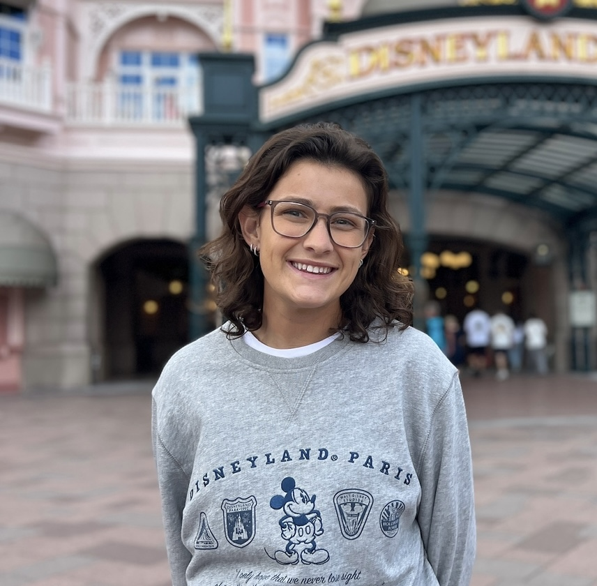

# Alyssa Graham · Data Scientist

Machine learning · SQL · Python & R · EDA · Forecasting

[📄 Download Résumé](assets/Alyssa_Graham_Resume.pdf) · [📧 Email Me](mailto:alyssa.lexy@gmail.com) · [🐙 GitHub](https://github.com/agraha91)

---

## Skills
`Python (pandas, scikit-learn)` `SQL` `R / ggplot`  
`ML: RF · XGBoost · SVM` `Time series · Prophet` `Tableau/Power BI`

---

## Highlights
- Built predictive models for sales, placement outcomes, and crime trends.
- Hands-on with clustering, model evaluation, and feature engineering.
- Strong communicator — presentations, white papers, and dashboards.

---

## Projects

### [Remote Worker Analysis](https://github.com/agraha91/Remote-Work-Productivity-Project)
Clustering & predictive modeling to identify productivity drivers (Linear Regression, Random Forest, K-Means).

### [College Placement Predictions](https://github.com/agraha91/College-Student-Job-Placement-Project)
Classification models (Decision Trees, SVM) with data balancing to forecast placement outcomes.

### [BMW Sales](https://github.com/agraha91/BMW-Sales-Project)
Sales analysis, forecasting, and correlation insights; evaluated Linear Regression, Random Forest, and XGBoost.

### [TSA Complaints](https://github.com/agraha91/TSA-Complaints-Analysis)
Explored complaint categories, time trends, and regional patterns with visual analytics.

### [Uber Trip Analysis](https://github.com/agraha91/Uber-Trip-Analysis)
Usage patterns, peak hours, and spatial trends using time series and mapping tools.

### [Student Activities vs GPA](https://github.com/agraha91/How-Student-Activities-Affect-GPA)
Correlation & regression to understand how extracurriculars relate to academic performance.

### [Amazon Customer Satisfaction](https://github.com/agraha91/Amazon-Customer-Satisfaction)
Sentiment analysis & classification to identify drivers of customer satisfaction.

### [Kia / Hyundai Theft](https://github.com/agraha91/Kia-Hyundai-Theft)
Public records analysis to explore geographic and temporal trends in thefts.

### [Crime Frequency Analysis](https://github.com/agraha91/Crime-Frequency-Analysis)
Time-series forecasting of city crime reports using Prophet in Python & R.

### [Childcare Affordability](https://github.com/agraha91/Childcare-Affordability)
Affordability ratios across states & income levels; highlights regional socioeconomic disparities.

---

## Experience

**Training Specialist** · Jeff Ellis Management  
_Feb 2024 – Present · Orlando, FL_
- Evaluated training effectiveness and iterated on programs via surveys and assessments.
- Implemented techniques that increased certification rates among participants.
- Supported team development with actionable feedback and safety-first practices.

---

## Education

- **M.S. Data Science** _(Expected Aug 2025)_ — Bellevue University
- **B.S. Biology** _(Jul 2023)_ — Kennesaw State University  
  Study Abroad: Belize, Marine Biology

---

## Contact

📧 **Email:** [alyssa.lexy@gmail.com](mailto:alyssa.lexy@gmail.com)  
📱 **Phone:** 404-960-0861  
🐙 **GitHub:** [agraha91](https://github.com/agraha91)
